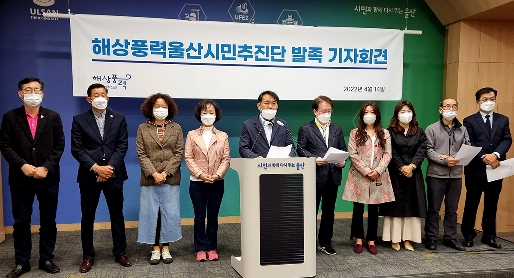

해상풍력 울산시민추진단 발족 기자회견
2022.4.14 오전11시 울산시청 프레스센터
부유식해상풍력, 이제 생존의 문제입니다
존경하는 울산시민 여러분
부유식해상풍력 울산시민추진단장 박창홍입니다.
지난 대통령선거 토론회를 통해, 많은 우리 국민은 RE100과 탄소국경세라는 말을 새롭게 알게 되었습니다.
RE100은 우리나라를 비롯한 전 세계 납품 하청기업들에게 “앞으로 재생에너지를 써서 생산한 제품을 납품하지 않으면 더 이상 거래하지 않겠다”는 전세계 일류기업들간의 약속입니다. 그럼에도 불구하고 부득이하게 납품하게 되면, 추가로 세금을 물게 하는 게 바로 탄소국경세입니다.
한마디로 RE100과 탄소국경세는 지금 당장 재생에너지로의 전환을 준비하지 않으면 앞으로 우리 경제의 숨통을 조일지도 모를 거대한 무역장벽으로 돌변할 수도 있습니다.
이미 BMW, 애플, 구글 등 350여개 글로벌 기업이 참여하고 있습니다.
SK, LG, 롯데 등 국내 14개 기업도 RE100에 가입했습니다.
이는 지난 200년간 화석 연료를 통해 이룩한 세계 경제발전의 어두운 이면인 기후위기에 대한 인류의 뒤늦은 각성입니다. 이미 UN에서도 재생에너지로의 전환과 탄소 중립이라는 새로운 에너지 체제를 탄생시켰습니다. 선의에 따라 해도 되고 하지 않아도 되는 일이 아니라 우리나라는 무조건 따라야 하는 일입니다.
당장 울산의 수많은 기업들도 재생에너지 사용을 요구받고 있습니다. 산업 현장에서는 관련 인력 스카웃 전쟁이 벌어지고, 재생에너지 공급이 지연될 경우 울산을 벗어나 해외로 이전하거나 해외에 직접 공장을 증설해야 하는 상황이 올 수도 있습니다.
과거 환경이라는 가치와 철학, 시민운동 차원에서 다루어졌던 재생에너지 관련 의제가 이제는 경제의 영역, 즉 먹고 사는 문제로 넘어온 것입니다. 한마디로 세계경제시대에 에너지 전환 없이는 생존을 장담할 수 없다는 의미이기도 합니다.
울산 역시 신재생에너지 공급이 제 때에 이루어지지 않는다면 자동차, 조선, 석유화학 기업들의 막대한 피해가 불가피합니다. 이는 곧 지난 60년 대한민국 경제를 견인해 왔던 울산의 위기이며, 기업의 위기이자, 시민들의 일자리 문제이기도 합니다.
다행히, 지난 몇 년간 울산시는 부유식해상풍력단지를 통해 이러한 위기를 새로운 도약의 기회로 만들기 위해 노력해 왔습니다. 2030년 준공을 목표로 울산과 영남지역 기업과 가정에 공급한다는 계획을 수립하고 야심차게 추진하고 있습니다.
문재인 정부 역시 2021년 7월, 울산의 부유식 해상풍력발전 사업을 한국판 그린뉴딜 대상 사업에 포함시켰습니다. 부유식 해상풍력 발전사업이 탄소 중립의 현실적 대안이자 새로운 에너지원으로서의 가능성을 인정한 것입니다.
이러한 부유식 해상풍력 발전사업이 계획대로 진행될 경우,
영남권 전체 규모인 약 580만 가구가 사용할 수 있는 전력을 생산하고,
약 30만개의 일자리가 만들어집니다. 뿐만 아니라, 50조원의 외자 유치가 가능해집니다. 탄소 배출은 연 930만톤이나 줄어드는 반면, 그린에너지인 수소는 8만4천톤을 생산할 수 있습니다.
공업도시 울산이 지난 60년간 울산 경제를 이끌어왔듯, 부유식해상풍력은 앞으로의 재생에너지도시 울산을 선도하는 결정적 먹거리산업이 될 것입니다. 이는 정치적 이해관계가 아닌, 오직 울산 미래경제의 생존을 위한 관점에서 바라봐야 할 사안입니다. 하지만, 안타깝게도 송철호 시장이 추진한다는 이유만으로, 국민의힘은 반대를 위한 반대와 허위선동만 일삼고 있습니다.
지난 3월 30일, 국민의힘 이채익 국회의원은 ‘부유식 해상풍력은 120만 울산시민을 기만한 정책사기극”이라 주장하는가 하면, 윤석열 대통령 당선자도 대선 기간에 울산을 방문해 부유식해상풍력단지 사업에 무슨 엄청난 하청비리가 있는 것처럼 호도했습니다.
RE100은 걱정할 필요가 없다는 뜻인지,
RE100에 대비하는 다른 대안이 있다는 것인지,
그들의 진심은 과연 무엇입니까?
적어도 국민의힘이 차기정부의 책임있는 여당이라면, 지난 60년 이상 국가경제를 견인해 온 울산의 미래가 걸린 에너지전환에 대해 어떤 준비를 하고 있는지를 성실히 밝혀야 합니다.
재생에너지 생산은 울산의 운명을 가를 중차대한 문제입니다.
부유식해상풍력발전단지가 더 이상 정쟁의 도구가 되어서는 안됩니다.
이것이 바로 오늘 해상풍력울산시민추진단이 탄생한 이유입니다.
해상풍력울산시민추진단은 우선 120여 명의 회원과 함께 출발합니다.
앞으로 거리 서명 운동과 해상풍력 알리기 캠페인을 통해 더 많은 울산시민에게 울산의 미래인 부유식해상풍력을 알릴 것입니다.
정치적 이해관계에 따라 울산시민의 삶과 미래가 흔들리는 것이 아니라,
시민의 뜻이 모여 정치를 움직일 수 있도록 하겠습니다.
울산시민 여러분,
울산의 미래를 함께 준비한다는 마음으로
우리 추진단의 활동을 지켜봐 주십시오.
그리고 함께 해 주십시오.
감사합니다.
2022년 4월 14일
해상풍력울산시민추진단장 박창홍
- 해상풍력 울산시민추진단 출범식
- 2022.4.16 오전11시
- 롯데백화점 울산점 정문앞 광장
#해상풍력울산시민추진단 #RE100 #부유식해상풍력
